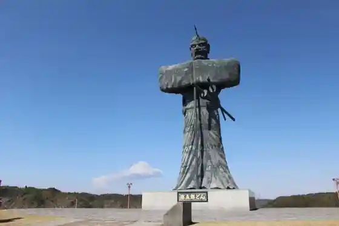
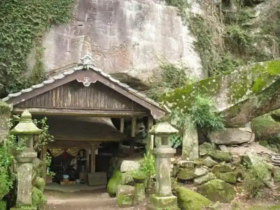
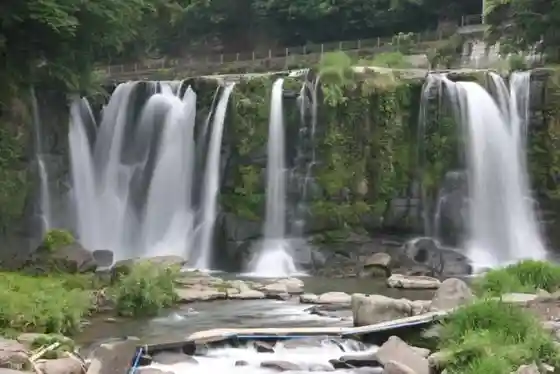
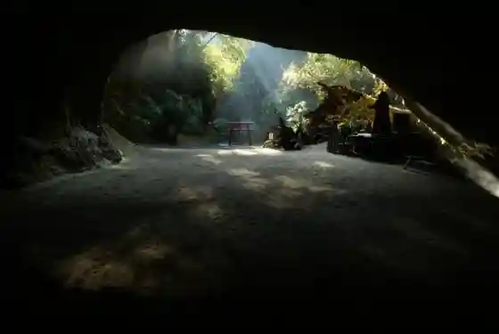

Roadside Station Osumi (Yagoro Densetsu Village)
Soo, Kagoshima · 099-482-5666 · Official / source link

Iwaya Kannon
Soo, Kagoshima · 099-482-5958 · Official / source link

Kirihara Falls
Soo, Kagoshima · 0986-76-8282 · Official / source link

Mizo no Kuchi Horana
Soo, Kagoshima · 0986-76-8282 · Official / source link

Takarabe Onsen Kenko Center (Takarabe Onsen)
Soo, Kagoshima · 0986-72-3553 · Official / source link
Jingaoka Koen Lookout
Soo, Kagoshima · 0986-28-0111 · Official / source link
Okawara Kyo Campground
Soo, Kagoshima · 0986-74-2555 · Official / source link
Yukyu Forest
Soo, Kagoshima · 0986-76-8810 · Official / source link
Roadside Station Takarabekirara Kan
Soo, Kagoshima · 0986-28-5666 · Official / source link
Hanabusa Kyo Ikoi no Mori Campground
Soo, Kagoshima · 0986-78-1100 · Official / source link
Mesena Sumiyoshi Koryu Center (Mesena Onsen)
Soo, Kagoshima · 0986-76-7898 · Official / source link
Shiroshika Gaku
Soo, Kagoshima · 0986-76-8810 · Official / source link
Nikko Shrine
Soo, Kagoshima · 0986-28-0111 · Official / source link
Roadside Station Sueyoshi
Soo, Kagoshima · 0986-79-1900 · Official / source link
Suekichi Mukae Park
Soo, Kagoshima · 0986-76-8874 · Official / source link
Fuyo Yuki to (Iwakawa Kaigun Kokutai Kichi)
Soo, Kagoshima · 0986-28-0111 · Official / source link
Foresutoadobencha
Soo, Kagoshima · 080-8555-1324 · Official / source link
Takarabe Mori no Gakko
Soo, Kagoshima · 0986-28-6120 · Official / source link
Fun BAKERY&CAFÉ
Soo, Kagoshima · 099-4820-0128 · Official / source link
Ai Village
Soo, Kagoshima · 0986-78-1441 · Official / source link
La fraise- Ra · Furezu
Soo, Kagoshima · 050-1521-7135 · Official / source link
Kosako Sutoa (Aisa Re Bento Kozako)
Soo, Kagoshima · 0986-76-0382 · Official / source link
Sanren Todoroki
Soo, Kagoshima · 0986-76-8282 · Official / source link
Hashiguchi Kanamono Mise
Soo, Kagoshima · 0986-72-3199 · Official / source link
Marin ’S Garden
Soo, Kagoshima · 090-1608-1854 · Official / source link
Kami Kakari Shoten
Soo, Kagoshima · 099-482-1898 · Official / source link
Kankoku Kateiryori Hana
Soo, Kagoshima · 099-479-3810 · Official / source link
Kafe Shuga
Soo, Kagoshima · 070-8987-7754 · Official / source link
Narumi Shokudo
Soo, Kagoshima · 080-8816-4121 · Official / source link
San Kichi Udon
Soo, Kagoshima · 0986-57-1080 · Official / source link
Kurobuta Ryori Yagoro Tei
Soo, Kagoshima · 099-482-5856 · Official / source link
Kumano Shrine
Soo, Kagoshima · Official / source link
Sumiyoshi Shrine
Soo, Kagoshima · 0986-76-5858 · Official / source link
Araya Yoho Ba
Soo, Kagoshima · 0986-79-1110 · Official / source link
Pateisuriiamiteie
Soo, Kagoshima · 099-482-0012 · Official / source link
O Kashi no Ueno
Soo, Kagoshima · 099-482-0207 · Official / source link
TA KA RA Shokudo
Soo, Kagoshima · 050-8888-2887 · Official / source link
Go Tsubu Ni Tane
Soo, Kagoshima · Official / source link
Oyatsu no Jikan
Soo, Kagoshima · 0986-58-7387 · Official / source link
SKLV (Su Club) Minamikyushu Chikusan Jui Gaku Kyoten
Soo, Kagoshima · 0986-36-6087 · Official / source link
Taka Mori Kafe Kitchinkamorii Go
Soo, Kagoshima · 0986-28-6120 · Official / source link
Ameri Kan
Soo, Kagoshima · 0986-76-0600 · Official / source link
Shinshiro Kohii
Soo, Kagoshima · Official / source link